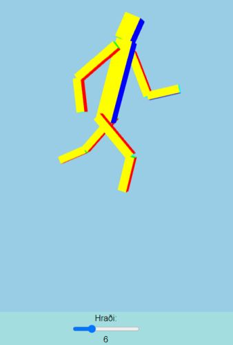
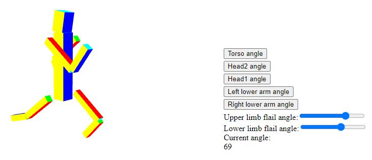
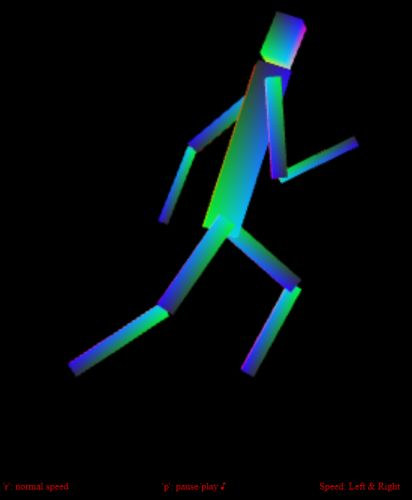
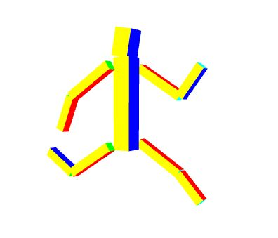

Nokkrar skemmtilegar lausnir á dæmi 2 í Heimadæmum 5
Tölvugrafík, haust 2024
Látið vita ef þið viljið ekki að ykkar lausn sé birt hér
- 
- Benjamín Reynir Jóhannsson
- 
- Einar Þór Ívarsson
- 
- Kristinn Roach Gunnarsson
- 
- Ragnar Björn Ingvarsson
hh (hja) hi.is, október 2024.